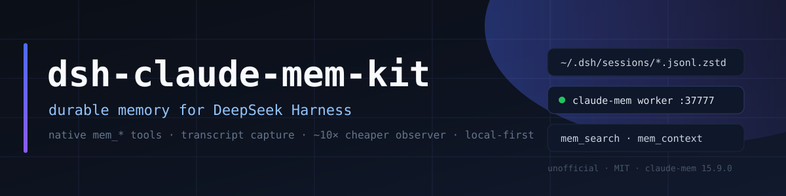

A cross-session memory layer for DeepSeek Harness (DSH) agents, built on Claude-Mem: native mem_search tools, automatic transcript capture, and roughly 10× lower observer cost than the default setup.
irm https://raw.githubusercontent.com/GreenJenckens/dsh-claude-mem-kit/main/scripts/bootstrap.ps1 | iex
curl -fsSL https://raw.githubusercontent.com/GreenJenckens/dsh-claude-mem-kit/main/scripts/bootstrap.sh | bash -s -- --profile web
Requires Node.js 20+ and an existing DSH profile (the desktop app, or dsh CLI for web/tui). The installer provisions Claude-Mem, pnpm and Bun when missing, asks for the observer API key, and finishes by wiring the autostart bridge.
Upstream @claude-mem/dsh registers mem_search, mem_timeline, mem_get_observations, mem_save, mem_context and a memory skill.
The worker tails DSH session transcripts and turns tool activity into durable observations — no hooks inside the agent.
Subagent transcripts are skipped: 78 % of historical observations came from subagent churn whose results the parent already holds.
Up to four tool events per request, short conversation generations, and 41 noisy DSH meta-tools skipped.
New sessions begin with a compact block of recent observations for the project.
Idempotent installers with --dry-run, backups, and a matching uninstall for all three platforms.
| Metric | Default claude-mem | This kit |
|---|---|---|
| Observer input tokens per event | ≈10 900 | ≈5 700 |
| Events processed | 100 % (186 transcripts) | ≈22 % (91 top-level) |
| Estimated total spend | 100 % | ≈10–12 % |
More: cost tuning guide.
DSH session │ writes ▼ ~/.dsh/sessions/**/session-*/session.v4.jsonl.zstd │ transcript-watch.json (schema: dsh) ▼ claude-mem worker :37777 ──▶ SQLite + Chroma (local) │ observer requests (batched) ▼ loopback bridge :37901 ──▶ OpenCode Go / any OpenAI-compatible endpoint │ ▼ DSH plugin: context on agent/created + mem_* tools